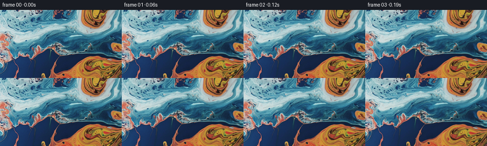

CODING AGENTS AS PIXEL WORLD MODELS
traex/GPT-6.1-Sol · 0005_s0
点击播放 · 原生 RGB 像素
逐轮保存的候选
回放视频、检查图与代码变化。
每份候选均可单独播放。实际图片检查记录在下方工具轨迹中。
候选 01播放与检查图
点击播放 · 原生 RGB 像素


展开代码变化
--- 上一保存版本
+++ 本次保存版本
@@ -0,0 +1,125 @@
+"""Generate a photographic liquid close-up by advecting the supplied RGB image.
+
+The camera pushes in while a smooth, divergence-free flow slowly curls the
+liquid. Each frame samples the original image, avoiding accumulated blur.
+No additional imagery or learned components are used.
+"""
+
+from pathlib import Path
+import json
+
+import numpy as np
+from PIL import Image
+
+import artifact_io
+
+
+ROOT = Path(__file__).resolve().parent
+
+
+def velocity(x, y, time):
+ """Analytic curl of a smooth stream function, in source pixels/second."""
+ # Large, slow roll. Gaussian vortices have zero divergence and smoothly
+ # decay, so they deform the liquid without squeezing its texture.
+ u = np.full_like(x, -0.28)
+ v = np.full_like(y, 0.12)
+ for cx, cy, radius, strength in (
+ (171.0, 74.0, 65.0, 182.0),
+ (198.0, 23.0, 27.0, -24.0),
+ (115.0, 84.0, 39.0, -43.0),
+ (223.0, 123.0, 34.0, 36.0),
+ ):
+ dx, dy = x - cx, y - cy
+ f = strength / radius**2 * np.exp(
+ -(dx * dx + dy * dy) / (2.0 * radius**2)
+ )
+ modulation = 0.93 + 0.07 * np.cos(0.55 * time + cx * 0.013)
+ u -= dy * f * modulation
+ v += dx * f * modulation
+
+ # Two broad capillary-flow components. Their stream-function gradients
+ # preserve the areas of colored pools rather than making them pulse.
+ for lx, ly, strength, phase, rate in (
+ (42.0, 31.0, 21.0, 0.6, 0.20),
+ (19.0, 23.0, 4.4, 2.3, -0.26),
+ ):
+ ax = x / lx + phase + rate * time
+ ay = y / ly - phase * 0.7 + rate * time * 0.6
+ u += strength / ly * np.sin(ax) * np.cos(ay)
+ v -= strength / lx * np.cos(ax) * np.sin(ay)
+ return u, v
+
+
+def material_coordinates(x, y, time):
+ # Trace particles backward through time using midpoint integration.
+ # Going straight to the original RGB keeps the fine glossy contours sharp.
+ steps = max(1, int(np.ceil(time / 0.16)))
+ dt = time / steps
+ for k in range(steps):
+ t = time - k * dt
+ u, v = velocity(x, y, t)
+ mx, my = x - 0.5 * dt * u, y - 0.5 * dt * v
+ u, v = velocity(mx, my, t - 0.5 * dt)
+ x, y = x - dt * u, y - dt * v
+ return x, y
+
+
+def cubic_kernel(distance):
+ # Catmull-Rom reconstruction retains detail during the optical push-in.
+ z = np.abs(distance)
+ return np.where(
+ z <= 1.0,
+ 1.5 * z**3 - 2.5 * z**2 + 1.0,
+ np.where(z < 2.0, -0.5 * z**3 + 2.5 * z**2 - 4 * z + 2, 0),
+ )
+
+
+def sample_rgb(image, x, y):
+ h, w = image.shape[:2]
+ x = np.clip(x, 0, w - 1)
+ y = np.clip(y, 0, h - 1)
+ ix, iy = np.floor(x).astype(np.int32), np.floor(y).astype(np.int32)
+ wx = [cubic_kernel(x - (ix + d)) for d in (-1, 0, 1, 2)]
+ wy = [cubic_kernel(y - (iy + d)) for d in (-1, 0, 1, 2)]
+ out = np.zeros((*x.shape, 3), dtype=np.float32)
+ for j, dy in enumerate((-1, 0, 1, 2)):
+ for i, dx in enumerate((-1, 0, 1, 2)):
+ pixel = image[np.clip(iy + dy, 0, h - 1), np.clip(ix + dx, 0, w - 1)]
+ out += pixel * (wx[i] * wy[j])[..., None]
+ return np.clip(np.rint(out), 0, 255).astype(np.uint8)
+
+
+def generate():
+ spec = json.loads((ROOT / "task_spec.json").read_text())
+ source = np.asarray(Image.open(ROOT / "first_frame.png").convert("RGB"))
+ count, h, w = spec["frames"], spec["height"], spec["width"]
+ assert source.shape == (h, w, 3)
+ frames = np.empty((count, h, w, 3), dtype=np.uint8)
+ frames[0] = source
+ yy, xx = np.mgrid[:h, :w].astype(np.float32)
+ origin_x, origin_y = (w - 1) / 2, (h - 1) / 2
+ image = source.astype(np.float32)
+
+ for index in range(1, count):
+ time = index / spec["fps"]
+ p = index / (count - 1)
+ # Almost constant optical zoom with a soft initial acceleration. The
+ # gentle rightward reframing keeps orange and blue in the close-up.
+ progress = 0.84 * p + 0.16 * p * p
+ zoom = np.exp(np.log(1.63) * progress)
+ drift = p * p * (3.0 - 2.0 * p)
+ cx = origin_x + 25.5 * drift
+ cy = origin_y + 9.0 * drift
+ sx = cx + (xx - origin_x) / zoom
+ sy = cy + (yy - origin_y) / zoom
+ sx, sy = material_coordinates(sx, sy, time)
+ frames[index] = sample_rgb(image, sx, sy)
+
+ assert np.array_equal(frames[0], source)
+ artifact_io.save(frames, ROOT)
+ return frames
+
+
+if __name__ == "__main__":
+ result = generate()
+ print(f"Saved {result.shape[0]} RGB frames: {result.shape[2]}x{result.shape[1]}")
候选 02播放与检查图
可观测工具轨迹
实际执行的命令与返回图片。
命令 1exit 0
/bin/bash -lc "ls -la && cat prompt.txt && printf '\\n---RULES---\\n' && cat GENERATION_RULES.md"
命令 2exit 0
/bin/bash -lc "cat task_spec.json && cat artifact_io.py && python - <<'PY'
from PIL import Image
import numpy as np
im=np.array(Image.open('first_frame.png').convert('RGB'))
print(im.shape)
print('min/max/mean',im.min((0,1)),im.max((0,1)),im.mean((0,1)))
x=np.array(Image.fromarray(im).resize((64,36)))
# hue with saturation brightness coded
for row in x:
print(''.join(' ' if max(c)<25 else '.' if max(c)-min(c)<25 else ('O' if c[0]>c[2]*1.5 and c[0]>c[1]*1.1 else 'B' if c[2]>c[0]*1.5 and c[2]>c[1]*1.1 else 'c' if c[1]+c[2]>c[0]*3 else 'y' if c[0]+c[1]>c[2]*3 else 'p' if c[0]+c[2]>c[1]*3 else ':') for c in row))
print('coarse RGB')
print(np.array(Image.fromarray(im).resize((16,9))).tolist())
PY"命令 3exit 0
/bin/bash -lc "python - <<'PY'
import importlib.util
for name in ['scipy','cv2']:
print(name, bool(importlib.util.find_spec(name)))
from PIL import Image
import numpy as np
im=np.array(Image.open('first_frame.png').convert('RGB')).astype(float)
z=np.array(Image.fromarray(im.astype('uint8')).resize((96,54))).astype(float)
# saturation and R-B difference classification, uppercase for dark/strong chroma
for row in z:
chars=[]
for r,g,b in row:
c='o' if r>b+12 else 'b' if b>r+15 else '.'
if max(r,g,b)<80: c=c.upper() if c"'!='"'.' else ':'
if max(r,g,b)>180 and max(r,g,b)-min(r,g,b)<32:c=' '
chars.append(c)
print(''.join(chars))
PY"命令 4exit 0
/bin/bash -lc "python generate.py && python - <<'PY'
from PIL import Image
import numpy as np
from pathlib import Path
import generate
frames=np.stack([np.array(Image.open(p).convert('RGB')) for p in sorted(Path('frames').glob('*.png'))])
assert frames.shape==(81,144,256,3)
assert frames.dtype==np.uint8
assert np.array_equal(frames[0],np.array(Image.open('first_frame.png').convert('RGB')))
d=np.abs(np.diff(frames.astype(float),axis=0)).mean((1,2,3))
print('Adjacent mean absolute differences:',float(d.min()),float(d.max()),float(d.mean()))
print('Final relative mean absolute difference:',np.abs(frames[-1].astype(float)-frames[0]).mean())
for n in [0,20,40,60,80]:
f=frames[n].astype(float)
orange=(f[:,:,0]>f[:,:,2]+12)
blue=(f[:,:,2]>f[:,:,0]+15)
print(n,'orange/blue fractions',round(orange.mean(),3),round(blue.mean(),3),'RGB means',f.mean((0,1)).round(1))
y,x=np.mgrid[:144,:256].astype(np.float32)
for i in [1,20,40,60,80]:
p=i/80
z=np.exp(np.log(1.63)*(.84*p+.16*p*p))
drift=p*p*(3-2*p)
sx=127.5+25.5*drift+(x-127.5)/z
sy=71.5+9*drift+(y-71.5)/z
sx,sy=generate.material_coordinates(sx,sy,i/16)
valid=(sx>=0)&(sx<=255)&(sy>=0)&(sy<=143)
# mapping determinant should stay positive and coherent
dx_x=np.gradient(sx,axis=1);dx_y=np.gradient(sx,axis=0)
dy_x=np.gradient(sy,axis=1);dy_y=np.gradient(sy,axis=0)
det=dx_x*dy_y-dx_y*dy_x
print(i,'coordinate limits',sx.min(),sx.max(),sy.min(),sy.max(),'inbounds',valid.mean(),'Jacobian',det.min(),det.max())
PY"命令 5exit 0
/bin/bash -lc 'command -v ffmpeg || true; ls -lh pixels.npz index.html inspection.png generate.py'
保存候选 2 份；完成命令 5 次；可验证图片返回 0 张。原始 API 响应与完整日志保留在本地。